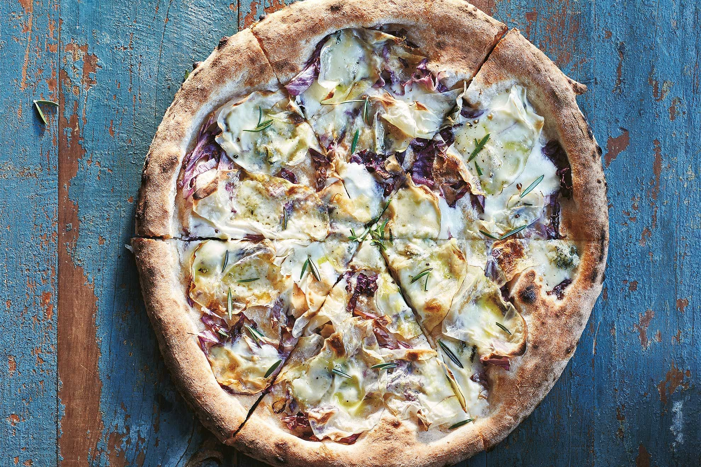

Home
Pizza Bianca Recipe

The pizza Bianca Gorgonzola is the yummy of the salty-yummies!
The pizza Bianca Gorgonzola is an italian-style recipe (specifically, from Napoli). Thin in the center, thicker and crispy in the borders. Ricotta with lemon base, and an extra touch from a D.O.P Grogonzola.
You can bake it alone, but we recommend doing it with your kids. You (they) will enjoy it (a lot!), and develop new neuron connections (so do you, I hope hehe). 😁
Ingredients
For the dough:
- Flour, 640g
- RT Water, 360ml
- Fresh Yeast, 10g
- Fine Salt, 15g
For the topping:
- Ricotta, 300g
- Gorgonzola, 150g
- Lemon, 1
- Pink Onions, 3
- Honey, as much as you like
- AOEV, as much as you like
- Nuts, a bunch
- Salt, to taste
- Black Pepper, to taste
- Fresh Basil, a few leaves
Note: AOEV stands for "Aceite de Oliva Extra Virgen" (Extra Virgin Olive Oil). D.O.P stands for "Denominazione di Origine Protetta" (Protected Designation of Origin), which is a certification for high-quality products.
Step-by-step
- In a large bowl, mix the flour and salt.
- Dissolve the fresh yeast in the room temperature water.
- Gradually add the water to the flour mixture, kneading until a smooth dough forms.
- Cover the dough with a damp cloth and let it rise for about 2 hours or until doubled in size.
- Preheat your oven to 250°C (482°F).
- Roll out the dough on a floured surface to your desired thickness.
- Transfer the rolled dough to a baking sheet lined with parchment paper.
- Spread the ricotta evenly over the dough, then crumble the Gorgonzola on top.
- Zest and juice the lemon, adding it to the pizza along with salt and black pepper to taste.
- Thinly slice the pink onions and distribute them over the pizza.
- Drizzle honey and AOEV over everything, then sprinkle with nuts and fresh basil leaves.
- Bake in the preheated oven for about 10-15 minutes or until the crust is golden brown.
- Remove from oven, slice, let it cool slightly, and serve. Enjoy!
- Optional: Add more honey or AOEV to taste before serving.
- Enjoy your delicious Pizza Bianca Gorgonzola!